屬性色票（站台官方 ENERGY_COLOR，src/lib/cards/energy.ts L19–31）
#6bb34c
#e05a2b
#4a92d4
#e8c423
#9b4ea0
#a65a2a
#3f3a5c
#8d8f94
龍 #c8a332／無色 #c8c2b5 在 H/I/J 有出現，但兩者沒有基本能量卡，且色相與金框／鋼段相近，故不入環（詳見 README）。
512px 主圖 — 網站頭圖、og-image、行銷素材底圖
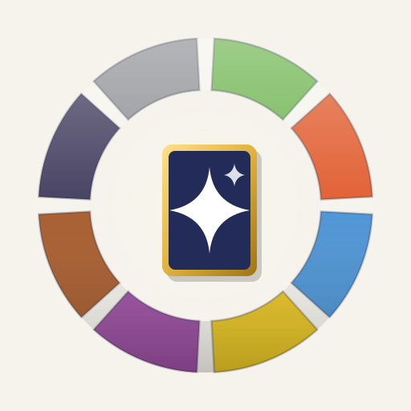
512 淺底
logo-512-light.png
淺色頁面、文件、簡報、印刷。
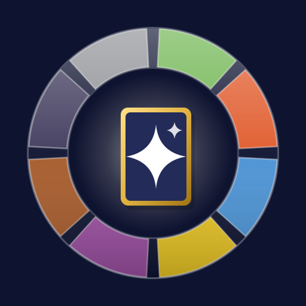
512 深底
logo-512-dark.png
站內深藍主題、YouTube 縮圖、宣傳片片頭。分隔線改亮色，惡段不沉底。
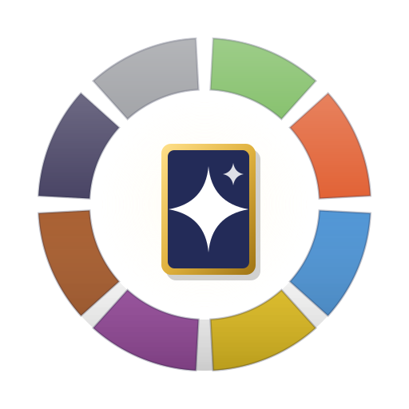
512 透明底（母檔輸出）
logo-512-transparent.png
要疊到任何底圖時用這張（淺底用；深底請改用 ondark SVG 重出）。
128px — 站內頭像、報告圖落款、通知 icon 來源
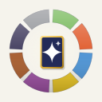
128 淺底
logo-128-light.png
報告圖（淺色卡）落款、Email 簽名。
128 深底
logo-128-dark.png
深色 UI 的中型識別、推播通知大圖示。
32px — favicon（簡化版構圖）
32 淺底（原寸＋4x）
logo-32-light.png
瀏覽器分頁 favicon。⚠ 32px 用「簡化版」：粗環、卡片只留金框＋單星。
32 深底（原寸＋4x）
logo-32-dark.png
深色分頁列。多一圈亮緣，讓惡段在深底也有輪廓。
單色版 — 單色印刷、浮水印、雕刻、低調場合
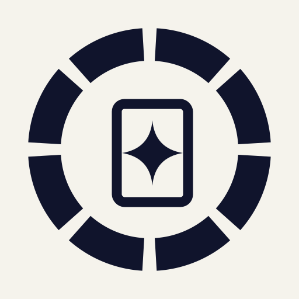
單色・淺底
logo-mono-light-512.png（墨色 #10142c）
黑白文件、傳真、印章。
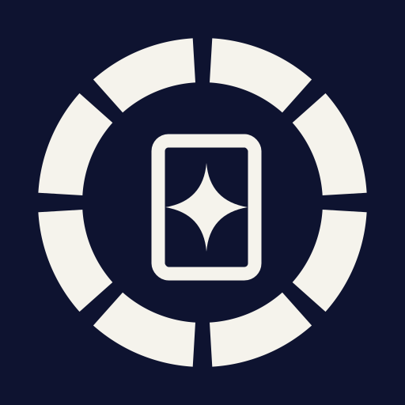
單色・深底
logo-mono-dark-512.png（米白 #f5f3ec）
深色簡報浮水印、衣服燙印。SVG 母檔 logo-mono.svg 用 currentColor 可自由換色。
PWA maskable — Android 安裝圖示（★正式版＝淺底，內容放大到 96%）
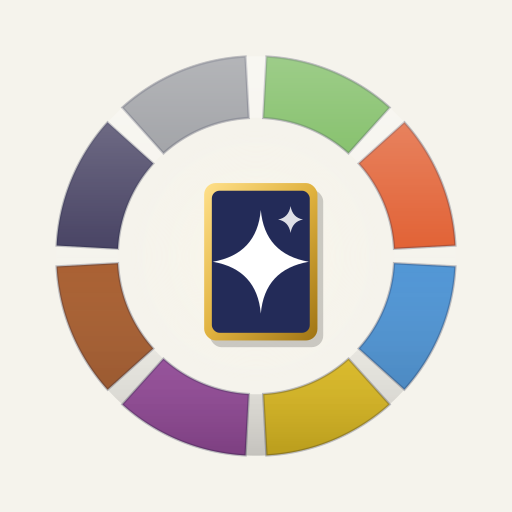
★ maskable 淺底（圓形裁切模擬）
logo-maskable-light-512.png
manifest purpose:maskable 正式版。內容比例 96%：色環外緣 200.9px＜W3C 安全圓半徑 204.8px（40%），留約 4px 緩衝。
maskable 淺底（squircle 裁切模擬）
同一檔的圓角方形裁切模擬。色環是同心圓構圖，對任何裁形都只會均勻削邊、不會切掉關鍵部位。
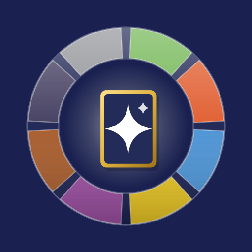
maskable 深藍底（備用）
logo-maskable-navy-512.png
同為 96% 比例的深底備用版（含亮色外環，外緣 202.6px 仍在安全圓內）。
{kind=link}
maskable-crop-sim.png — 已逐一目視確認金框卡與 8 色環在最嚴的圓形裁切下完整保留。
行銷素材 — og-image 與 YouTube 縮圖
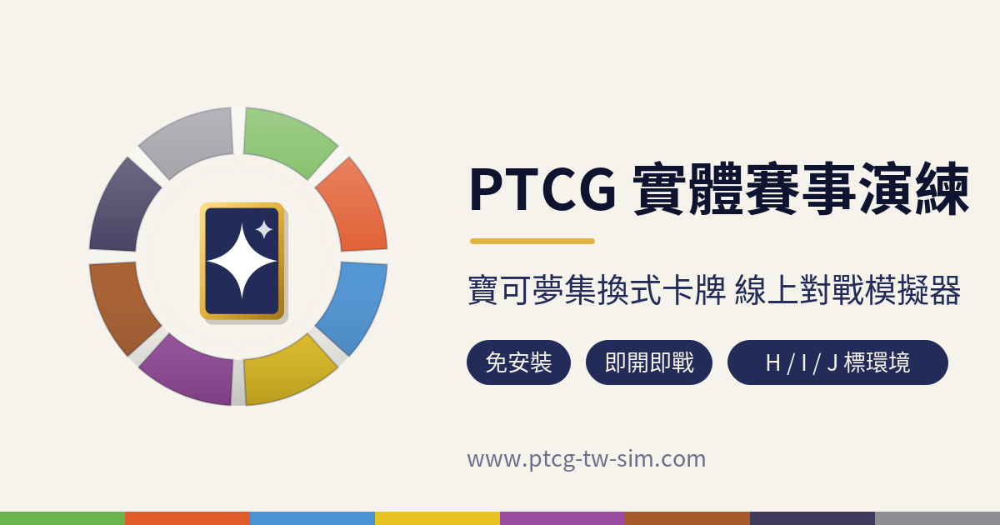
og-image（1200×630）
og-image-1200x630.png
FB／LINE／Twitter 分享預覽卡。取代 static/og-image.png（沿用原檔名覆蓋即可）。文案在 gen_marketing.py 頂部 TEXTS，改字重跑即可。
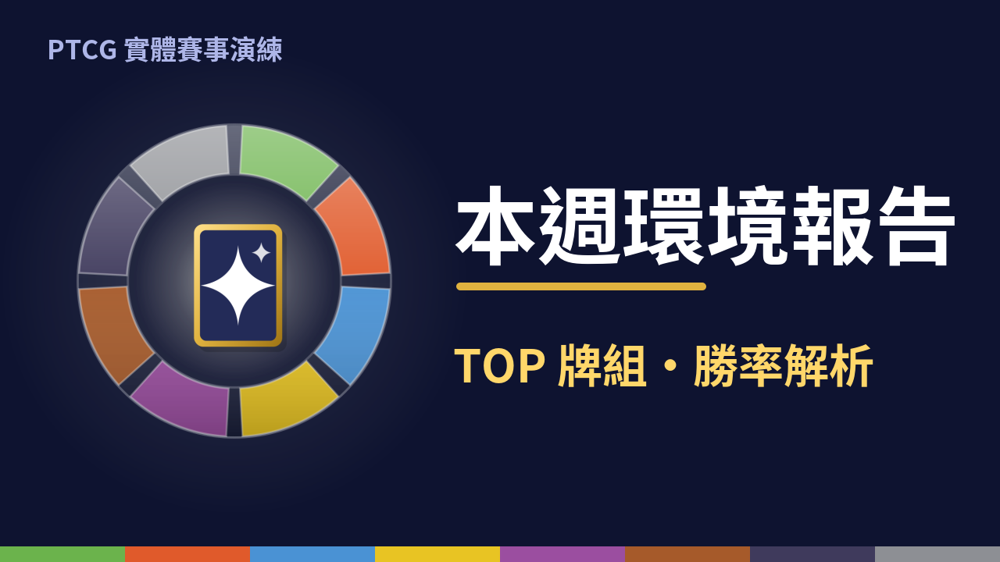
YouTube 縮圖（1280×720，範例標題版）
youtube-thumb-1280x720.png
每週環境報告縮圖範例。右側 x580–1240、y140–620 為可替換標題區。
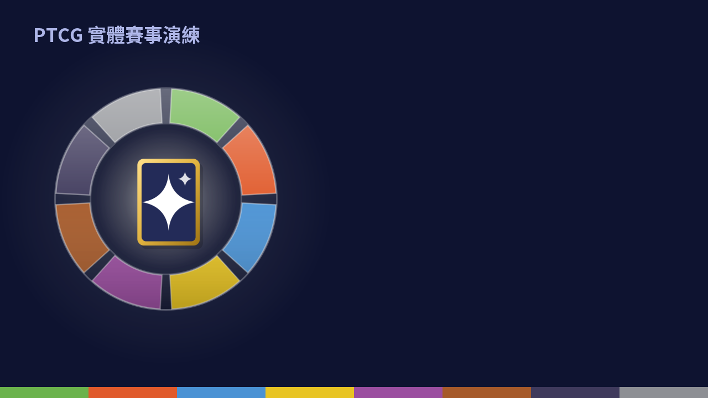
YouTube 縮圖底圖（無標題）
youtube-thumb-base-1280x720.png
上傳到 Canva 當底圖，每週只在右側空白區加當週標題文字（主標白色粗體約 100pt、副標金色 #FFD76A 約 55pt）。
SVG 母檔與再生
logo-master.svg（淺底用）／logo-master-ondark.svg（深底用：亮分隔線＋亮緣）／
logo-simple.svg・logo-simple-ondark.svg（32px 簡化構圖）／logo-mono.svg（currentColor 單色）。重出全部 PNG：
python3 gen_logo.py（logo 系列）＋ python3 gen_marketing.py（og-image／YouTube 縮圖／裁切模擬；需 cairosvg 與 Noto Sans CJK TC 字型）。改色只需改腳本頂部 RING 表——但請先改 src/lib/cards/energy.ts 保持全站一致。畫法完整紀錄：
skill/SKILL.md（給未來 AI 重現與延伸這套識別用；含查證方法、規格、替換清單、踩坑史）。紅線自查：色環為 8 段多色、無上下二分、無中央橫帶、無中央圓鈕（中央是矩形卡）；未使用官方能量符號圖形、角色、標準字。